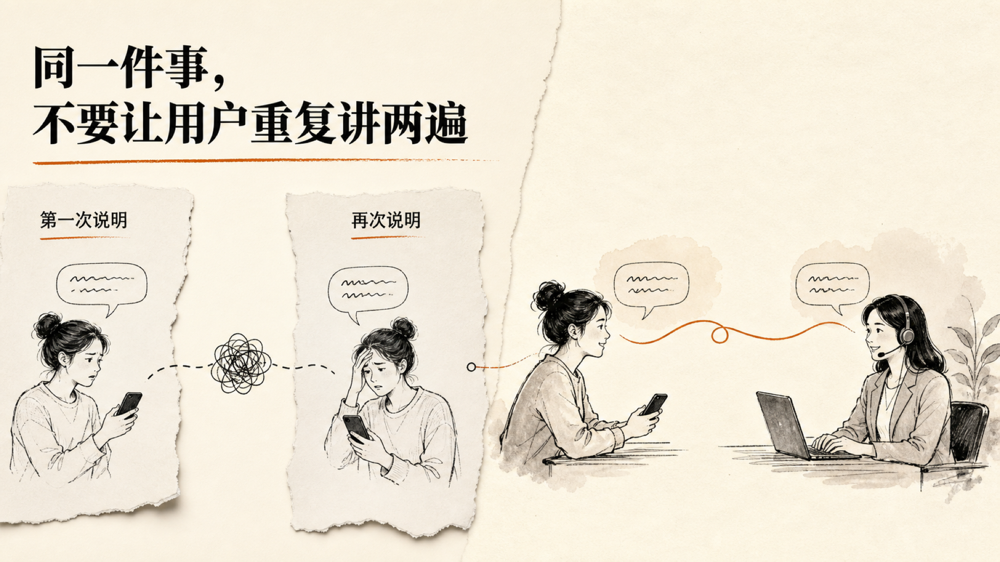

客服体验：编辑叙事视觉方案覆盖
主题：
editorial/paper-magazine
· 四种补充方案 · 视觉 QA 均通过
95 分以上
s01 · documentary-hero · 96/100
s02 · profile-feature · 96/100

s03 · comparison-spread · 95/100
s04 · collage-scene · 96/100